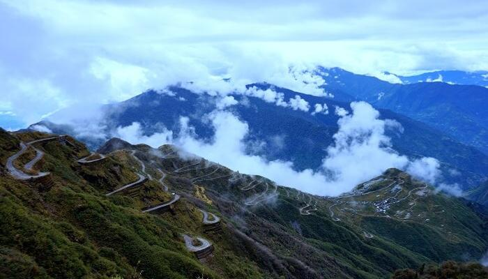
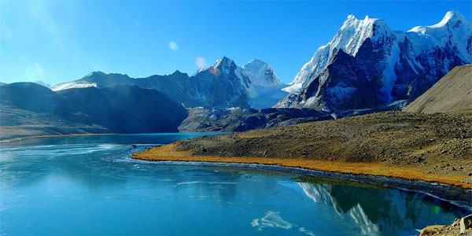
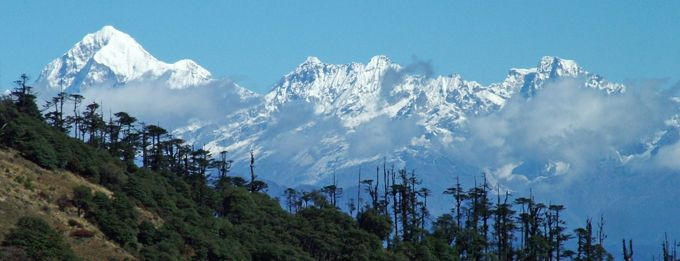

Climate of Sikkim

The state has five seasons: winter, summer, spring, autumn, and monsoon season.
climate ranges from sub-tropical in the south to tundra in the north.
Most of the inhabited regions of Sikkim experience a temperate climate, with
temperatures seldom exceeding 28 °C (82 °F) in summer.

The average annual temperature for most of Sikkim is around 18 °C (64 °F).
Sikkim is one of the few states in India to receive regular snowfall.
The snow line ranges from 6,100 metres (20,000 ft) in the south of the
state to 4,900 metres (16,100 ft) in the north.[59] The tundra-type region
in the north is snowbound for four months every year, and the temperature
drops below 0 °C (32 °F) almost every night.[54] In north-western Sikkim,
the peaks are frozen year-round;[60] because of the high altitude, temperatures
in the mountains can drop to as low as −40 °C (−40 °F) in winter.

During the monsoon, heavy rains increase the risk of landslides.
The record for the longest period of continuous rain in Sikkim is 11 days.
Fog affects many parts of the state during winter and the monsoons, making transportation perilous.
For more info......click below
For more info